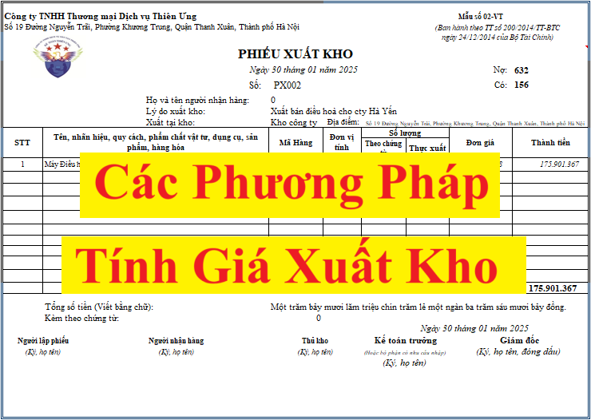

Tổng hợp các phương pháp tính đơn giá xuất kho theo hướng dẫn tại thông tư 200/2014/TT-BTC và Thông tư 133/2016/TT-BTC
1. Các phương pháp tính giá xuất kho theo thông tư 200/2014/TT-BTC
Theo khoản 9, điều 23 của thông tư 200/2014/TT-BTC quy định về nguyên tắc kế toán hàng tồn kho thì:
9. Khi xác định giá trị hàng tồn kho cuối kỳ, doanh nghiệp áp dụng theo một trong các phương pháp sau:
a) Phương pháp tính theo giá đích danh: Phương pháp tính theo giá đích danh được áp dụng dựa trên giá trị thực tế của từng thứ hàng hoá mua vào, từng thứ sản phẩm sản xuất ra nên chỉ áp dụng cho các doanh nghiệp có ít mặt hàng hoặc mặt hàng ổn định và nhận diện được.
b) Phương pháp bình quân gia quyền: Theo phương pháp bình quân gia quyền, giá trị của từng loại hàng tồn kho được tính theo giá trị trung bình của từng loại hàng tồn kho đầu kỳ và giá trị từng loại hàng tồn kho được mua hoặc sản xuất trong kỳ. Giá trị trung bình có thể được tính theo từng kỳ hoặc sau từng lô hàng nhập về, phụ thuộc vào điều kiện cụ thể của mỗi doanh nghiệp.
c) Phương pháp nhập trước, xuất trước (FIFO): Phương pháp nhập trước, xuất trước áp dụng dựa trên giả định là giá trị hàng tồn kho được mua hoặc được sản xuất trước thì được xuất trước, và giá trị hàng tồn kho còn lại cuối kỳ là giá trị hàng tồn kho được mua hoặc sản xuất gần thời điểm cuối kỳ. Theo phương pháp này thì giá trị hàng xuất kho được tính theo giá của lô hàng nhập kho ở thời điểm đầu kỳ hoặc gần đầu kỳ, giá trị của hàng tồn kho cuối kỳ được tính theo giá của hàng nhập kho ở thời điểm cuối kỳ hoặc gần cuối kỳ còn tồn kho.
Mỗi phương pháp tính giá trị hàng tồn kho đều có những ưu, nhược điểm nhất định. Mức độ chính xác và độ tin cậy của mỗi phương pháp tuỳ thuộc vào yêu cầu quản lý, trình độ, năng lực nghiệp vụ và trình độ trang bị công cụ tính toán, phương tiện xử lý thông tin của doanh nghiệp. Đồng thời cũng tuỳ thuộc vào yêu cầu bảo quản, tính phức tạp về chủng loại, quy cách và sự biến động của vật tư, hàng hóa ở doanh nghiệp.
Riêng đối với hàng hóa thì Theo điểm c, khoản 1, điều 29 của thông tư 200/2014/TT-BTC thì Để tính giá trị hàng hóa tồn kho, kế toán có thể áp dụng một trong các phương pháp sau:
+ Phương pháp nhập trước - xuất trước;
+ Phương pháp thực tế đích danh;
+ Phương pháp bình quân gia quyền;
Một số đơn vị có đặc thù (ví dụ như các đơn vị kinh doanh siêu thị hoặc tương tự) có thể áp dụng kỹ thuật xác định giá trị hàng tồn kho cuối kỳ theo phương pháp Giá bán lẻ. Phương pháp này thường được dùng trong ngành bán lẻ để tính giá trị của hàng tồn kho với số lượng lớn các mặt hàng thay đổi nhanh chóng và có lợi nhuận biên tương tự mà không thể sử dụng các phương pháp tính giá gốc khác. Giá gốc hàng tồn kho được xác định bằng cách lấy giá bán của hàng tồn kho trừ đi lợi nhuận biên theo tỷ lệ phần trăm hợp lý. Tỷ lệ được sử dụng có tính đến các mặt hàng đó bị hạ giá xuống thấp hơn giá bán ban đầu của nó. Thông thường mỗi bộ phận bán lẻ sẽ sử dụng một tỷ lệ phần trăm bình quân riêng.
2. Các phương pháp tính giá xuất kho theo thông tư 133/2016/TT-BTC:
Theo khoản 8, điều 22 của thông tư 133/2016/TT-BTC quy định về nguyên tắc kế toán hàng tồn kho thì:
8. Khi xác định giá trị hàng tồn kho xuất trong kỳ, doanh nghiệp áp dụng theo một trong các phương pháp sau:
a) Phương pháp tính theo giá đích danh: Phương pháp tính theo giá đích danh được áp dụng dựa trên giá trị thực tế của từng lần nhập hàng hóa mua vào, từng thứ sản phẩm sản xuất ra nên chỉ áp dụng cho các doanh nghiệp có ít mặt hàng hoặc mặt hàng ổn định và nhận diện được chi tiết về giá nhập của từng lô hàng tồn kho.
b) Phương pháp bình quân gia quyền: Theo phương pháp bình quân gia quyền, giá trị của từng loại hàng tồn kho được tính theo giá trị trung bình của từng loại hàng tồn kho đầu kỳ và giá trị từng loại hàng tồn kho được mua hoặc sản xuất trong kỳ. Giá trị trung bình có thể được tính theo từng kỳ hoặc sau từng lô hàng nhập về, phụ thuộc vào điều kiện cụ thể của mỗi doanh nghiệp.
c) Phương pháp nhập trước, xuất trước (FIFO): Phương pháp nhập trước, xuất trước áp dụng dựa trên giả định là giá trị hàng tồn kho được mua hoặc được sản xuất trước thì được xuất trước và giá trị hàng tồn kho còn lại cuối kỳ là giá trị hàng tồn kho được mua hoặc sản xuất gần thời điểm cuối kỳ. Theo phương pháp này thì giá trị hàng xuất kho được tính theo giá của lô hàng nhập kho ở thời điểm đầu kỳ hoặc gần đầu kỳ, giá trị của hàng tồn kho cuối kỳ được tính theo giá của hàng nhập kho ở thời điểm cuối kỳ hoặc gần cuối kỳ còn tồn kho.
Mỗi phương pháp tính giá trị hàng tồn kho đều có những ưu, nhược điểm nhất định. Mức độ chính xác và độ tin cậy của mỗi phương pháp tùy thuộc vào yêu cầu quản lý, trình độ, năng lực nghiệp vụ và trình độ trang bị công cụ tính toán, phương tiện xử lý thông tin của doanh nghiệp. Đồng thời cũng tùy thuộc vào yêu cầu bảo quản, tính phức tạp về chủng loại, quy cách và sự biến động của vật tư, hàng hóa ở doanh nghiệp.
Riêng đối với hàng hóa thì Theo điểm c, khoản 1, điều 28 của thông tư 200/2014/TT-BTC thì Để tính giá trị hàng hóa xuất kho, kế toán có thể áp dụng một trong các phương pháp sau:
+ Phương pháp nhập trước - xuất trước;

+ Phương pháp giá thực tế đích danh;
+ Phương pháp bình quân gia quyền sau mỗi lần nhập hoặc cuối kỳ.
- Một số đơn vị có đặc thù (ví dụ như các đơn vị kinh doanh siêu thị hoặc tương tự) có thể áp dụng kỹ thuật xác định giá trị hàng tồn kho cuối kỳ theo phương pháp giá bán lẻ. Theo phương pháp này, giá trị xuất kho của hàng hóa được xác định căn cứ vào giá bán của hàng tồn kho trừ đi lợi nhuận biên (do doanh nghiệp tự xác định) theo tỷ lệ phần trăm hợp lý. Tỷ lệ phần trăm này có tính việc các mặt hàng có thể bị hạ giá xuống thấp hơn giá bán ban đầu. Thông thường mỗi bộ phận bán lẻ sẽ sử dụng một tỷ lệ phần trăm bình quân riêng.
3. Các phương pháp tính giá xuất kho theo Chuẩn mực số 02 - Hàng tồn kho
Việc tính giá trị hàng tồn kho được áp dụng theo một trong các phương pháp sau:
(a) Phương pháp tính theo giá đích danh;
(b) Phương pháp bình quân gia quyền;
(c) Phương pháp nhập trước, xuất trước;
(d) Phương pháp nhập sau, xuất trước.
Trong đó:
+ Phương pháp tính theo giá đích danh được áp dụng đối với doanh nghiệp có ít loại mặt hàng hoặc mặt hàng ổn định và nhận diện được.
+ Theo phương pháp bình quân gia quyền, giá trị của từng loại hàng tồn kho được tính theo giá trị trung bình của từng loại hàng tồn kho tương tự đầu kỳ và giá trị từng loại hàng tồn kho được mua hoặc sản xuất trong kỳ. Giá trị trung bình có thể được tính theo thời kỳ hoặc vào mỗi khi nhập một lô hàng về, phụ thuộc vào tình hình của doanh nghiệp.
+ Phương pháp nhập trước, xuất trước áp dụng dựa trên giả định là hàng tồn kho được mua trước hoặc sản xuất trước thì được xuất trước, và hàng tồn kho còn lại cuối kỳ là hàng tồn kho được mua hoặc sản xuất gần thời điểm cuối kỳ. Theo phương pháp này thì giá trị hàng xuất kho được tính theo giá của lô hàng nhập kho ở thời điểm đầu kỳ hoặc gần đầu kỳ, giá trị của hàng tồn kho được tính theo giá của hàng nhập kho ở thời điểm cuối kỳ hoặc gần cuối kỳ còn tồn kho.
+ Phương pháp nhập sau, xuất trước áp dụng dựa trên giả định là hàng tồn kho được mua sau hoặc sản xuất sau thì được xuất trước, và hàng tồn kho còn lại cuối kỳ là hàng tồn kho được mua hoặc sản xuất trước đó. Theo phương pháp này thì giá trị hàng xuất kho được tính theo giá của lô hàng nhập sau hoặc gần sau cùng, giá trị của hàng tồn kho được tính theo giá của hàng nhập kho đầu kỳ hoặc gần đầu kỳ còn tồn kho.
Lưu ý: Hiện nay việc tính đơn giá xuất kho sẽ thực hiện theo các phương pháp tại chế độ kế toán (Doanh nghiệp bạn áp dụng theo chế độ kế toán nào thì thực hiện theo hướng dẫn tại chế độ kế toán đó
Về để biết chi tiết về cách tính đơn giá xuất kho theo hướng dẫn tại thông tư 200/2014/TT-BTC và Thông tư 133/2016/TT-BTC thì các bạn tại đây:
(Chế độ kế toán doanh nghiệp hiện hành theo Thông tư số 200/2014/TT-BCT và Thông tư số 133/2016/TT-BCT đã bỏ phương pháp nhập sau xuất trước khi tính giá trị hàng tồn kho)